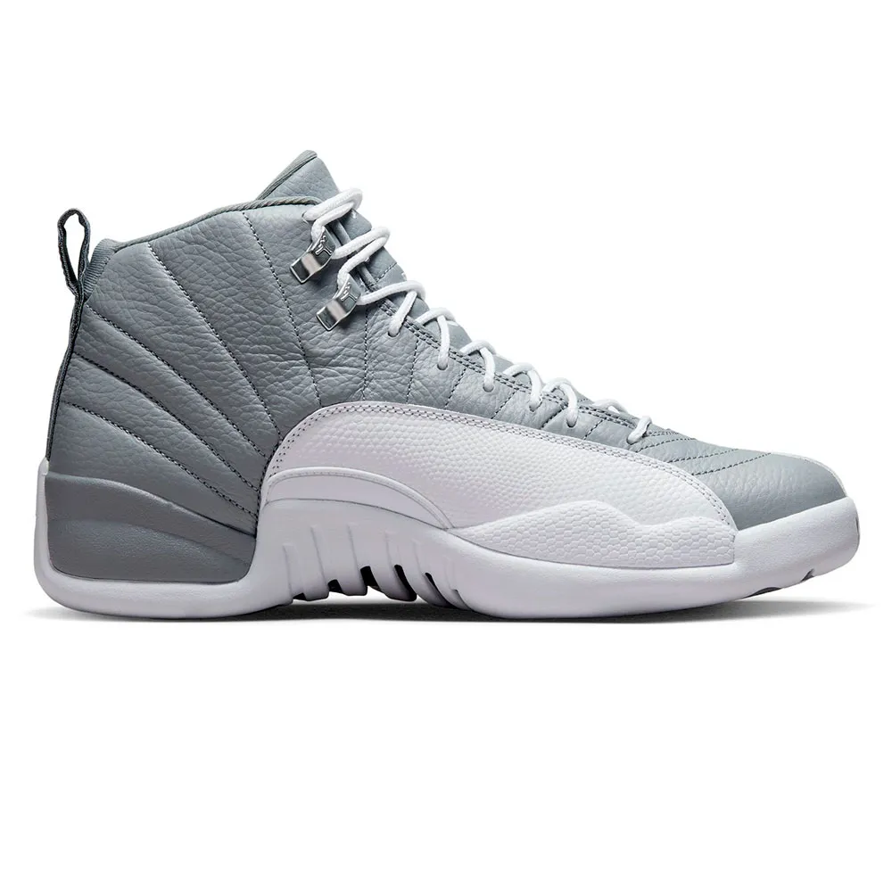
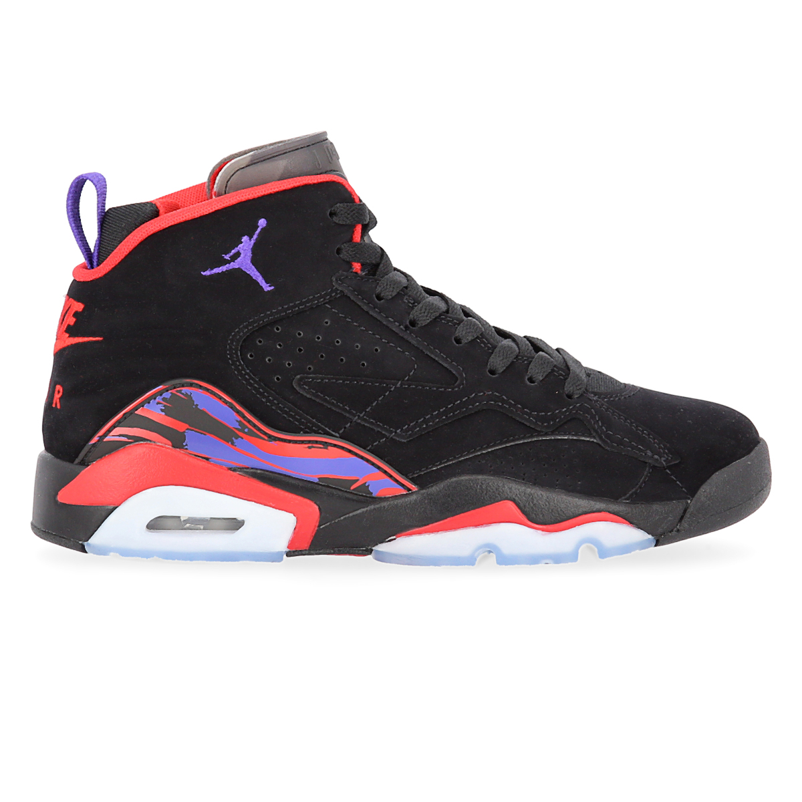

Zapatilla Air Jordan 12 Low “Wolf Grey”
Las ZapatillasJordanJumpmanMvpHombre Air Jordan 12 Low “Wolf Grey” es una de las combinaciones de colores prometedoras que saldrá el próximo año. Destacando un trasfondo adorable de Georgetown Hoyas, salvo la marca Volt, la parte superior predominantemente gris se compensa con detalles en azul marino en la lengüeta y el talón para una paleta sutil pero impactante.
Zapatilla Jordan Jumpman
Las Zapatillas Jordan Jumpman Mvp Hombre elevan tu estilo y el de lo que conocemos como zapatillas. La clave de este increíble par está en la unidad Air Max visible, que te proporciona una amortiguación de impactos ligera y cómoda debajo del talón. Su diseño en la parte superior combina cuero auténtico, cuero sintético y poliéster para brindarte mayor t ranspirabilidad exterior.
Air Jordan 6 Infrared
Las zapatillas Air Jordan 6 Retro 'UNC' salieron a la venta en diciembre de 2017 en homenaje al título nacional de la Universidad de Carolina del Norte. Cuentan con una parte superior de nobuk negro y detalles en azul universitario en la lengüeta, la marca Jumpman, el cierre de cordones, la lengüeta y la entresuela. El aire visible en el talón proporciona amortiguación, mientras que la suela presenta secciones translúcidas.